Wstęp
Zbliża się Wielkanoc, więc czas na pisanki!
Krok 1: Rysujemy jajko
Zacznij od narysowania jajka.
Zadania do wykonania
Jeśli jeszcze tego nie zrobiłeś, otwórz edytor Scratcha na stronie jumpto.cc/scratch-new.
Zaloguj się, żeby móc zapisywać projekt.
Usuń duszka-kota i zmień tło na
blue sky. Twoja scena powinna wyglądać mniej więcej tak:
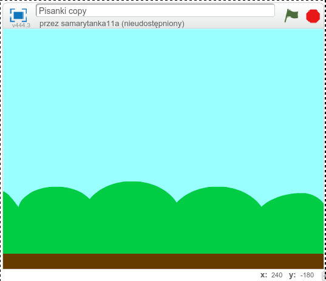
- Usuń duszka-kota i kliknij na ikonę pędzelka, żeby narysować nowego duszka:
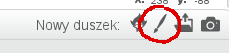
- Przejdź do trybu wektorowego, żeby mieć dostęp do narzędzi lepiej
nadających się do narysowania jajka:
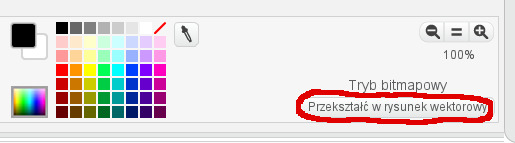
- Narysuj elipsę. Elipsa jest trochę podobna do jajka:
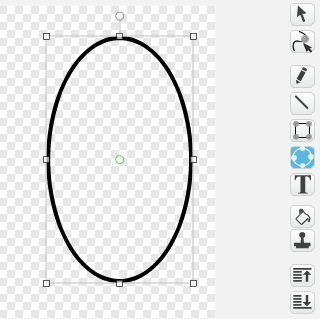
- Przekształć elipsę tak, żeby bardziej przypominała jajko:
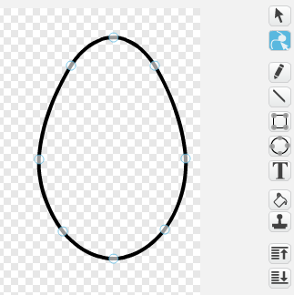
- Użyj narzędzia krzyżyka, żeby ustawić jajko mniej więcej na środku pola rysowania. Następnie przekształć rysunek w bitmapę. W trybie bitmapy łatwiej Ci będzie pokolorować jajko:

- Wypełnij jajko jasnym naturalnym kolorem. Nie ozdabiaj go jeszcze!
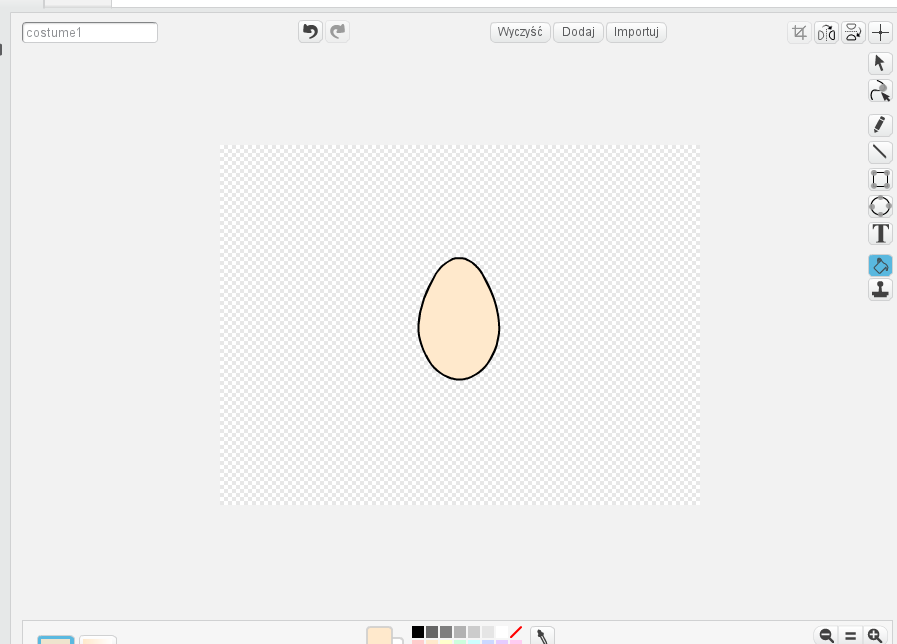
Zapisz swój projekt
Krok 2: Malujemy pisankę!
W tym kroku dodamy naszemu jajku nowy kostium przedstawiający kolorową pisankę.
Zadania do wykonania
Zduplikuj kostium (a nie duszka). Duszek ma teraz dwa identyczne kostiumy,
kostium1ikostium2. Zmień im nazwy najajkoipisanka.Użyj pędzelka i innych narzędzi, żeby pomalować kostium
pisankaw wesołe kolory. Na przykład tak: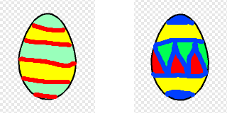
Krok 3: Spadające jajko
W tym kroku sprawimy, żeby po naciśnięciu zielonej flagi jajko pojawiało się na górze ekranu a następnie spadało.
Zadania do wykonania
- Zacznij od bloków
Spróbuj wpisywać do okienka w bloku
ustaw y naróżne liczby, na przykład0,100,-50. Za każdym razem klikaj na zieloną flagę żeby sprawdzić, gdzie pojawi się jajko. Spróbuj znaleźć taką liczbę, żeby jajko pojawiało się blisko górnej krawędzi ekranu.Dodaj ruch w dół, aż na dół ekranu. Użyj do tego następujących bloków:
Sprawdź, co będzie się działo, jeśli zamiast
-4wpiszesz w blokuzmień y oinną liczbę, na przykład-1lub-10.Po każdym naciśnięciu zielonej flagi jajko pojawia się w tym samym miejscu. Wstaw przed pętlę
powtarzaj ażnastępujące bloki, tak żeby jajko pojawiało się czasem z lewej strony, czasem z prawej, a czasem blisko środka:

Przetestuj swój projekt.
Po każdym naciśnięciu zielonej flagi jajko powinno pojawiać się na górze i spadać aż do dolnej krawędzi.
Zapisz swój projekt
Krok 4: Zamienianie jajek w pisanki
W tym kroku zmienimy skrypt jajka tak, żeby zamieniało się w pisankę po dotknięciu myszką.
Zadania do wykonania
- Utwórz następujący skrypt:
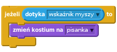
Gdzie należy umieścić ten skrypt, żeby jajko zmieniało się w pisankę po dotknięciu myszką? Przed pętlą
powtarzaj aż, wewnątrz pętli czy może po pętli? Jeśli nie jesteś pewien, wypróbuj różne możliwości.Po naciśnięciu zielonej flagi jajko powinno być znów niepomalowane. Żeby tak było, wstaw w odpowiednie miejsce taki blok:
Przetestuj swój projekt.
Po każdym naciśnięciu zielonej flagi jajko powinno pojawiać się na górze niepomalowane. Po dotknięciu myszką jajko powinno zamieniać się w pisankę.
Zapisz swój projekt
Krok 5: Chcemy więcej pisanek!
Teraz zacznie się zabawa: rozmnożymy jajka, żeby zrobić z nich dużo pisanek.
Użyjemy do tego klonowania.
Zadania do wykonania
- Odczep od skryptu jajka blok znajdujący się na samej górze
a na jego miejsce wstaw
- Następnie dodaj nowe bloki:
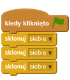
Sprawdź co się zmieniło. Zamiast jednego, powienieneś widzieć trzy spadające jajka.
- Ciekawiej będzie, jeśli jajka będą pojawiać się po kolei. Dodaj do skryptu dwa bloki
czekaj 1 s:
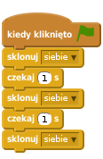
- Czy wiesz co zrobić, żeby zamiast 3 pojawiło się 5 jajek? A 15 jajek? Wskazówka: wystarczy użyć jednego bloku
sklonuj siebiei jednegoczekaj 1 s, i umieścić je wewnątrz bloku pętli:
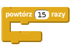
Jedno jajko się nie rusza! To nasz “oryginał”, którego klony tworzymy. Schowaj je wstawiając blok
ukryjtuż przed pętląpowtórz 15 razy.Teraz zniknęły też klony! Wstaw blok
pokażtuż za blokiemkiedy zaczynam jako klon.
Przetestuj swój projekt.
Zapisz swój projekt
Krok 6: Jeszcze więcej pisanek!
Żeby zabawa była fajniejsza, zrobimy tak, żeby po pomalowaniu każdego jajka pojawiało się jedno dodatkowe jajko. Dzięki temu nowe jajka będą pojawiać się tym szybciej, im szybciej będziesz malować pisanki.
Zadania do wykonania
- Znajdź w swoim skrypcie następującą pętlę:
Wstaw do środka bloku jeżeli nowy blok sklonuj [siebie]:
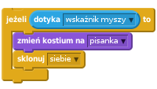
- Sprawdź co się zmieniło. Chyba przesadziliśmy z ilością jajek! Potrzebna nam jeszcze jedna zmiana w skrypcie:
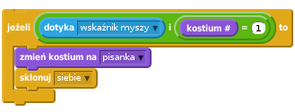
Przetestuj swój projekt.
Zapisz swój projekt
Krok 7: Uciekające jajka
Malowanie pisanek idzie nam za łatwo. Wprowadźmy do skryptu drobną zmianę tak, żeby upolowanie jajka nie było takie proste.
Zadania do wykonania
- W twoim skrypcie powinien znajdować się fragment opisujący spadanie jajka:
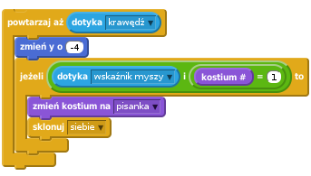
Tuż po zmień y wstaw dwa nowe bloki, które sprawią, że jajko będzie uciekać przed myszką:
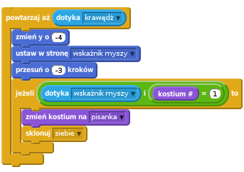
Sprawdź, jak zachowują się jajka. Co się dzieje, jeśli zamiast
-3wpiszesz w okienku blokuprzesuń o ( ) krokówinną liczbę? Spróbuj z-5albo3(bez minusa).Zauważ, że czasami jajka przyklejają się do boków sceny. Dodaj nowy blok
usuń tego klonana koniec skryptu:
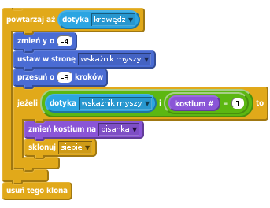
Zapisz swój projekt
Wyzwanie: Dodaj liczenie punktów
Utwórz nową zmienną punkty. Niech po pomalowaniu każdego jajka wartość tej zmiennej zwiększa się o 1. Musisz też ustalić w którym momencie zabawa się kończy i przestajemy liczyć punkty. W tym celu użyj bloku zatrzymaj wszystko:
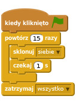